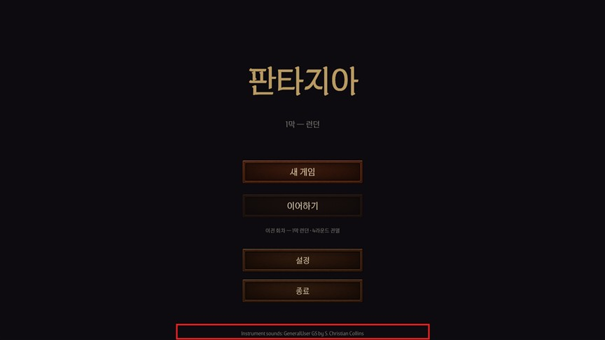
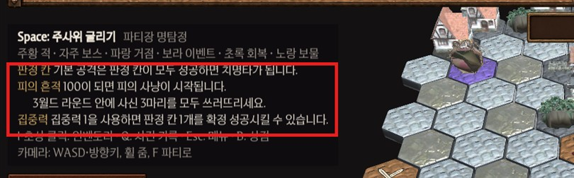
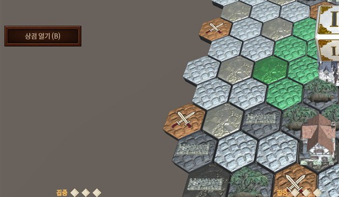
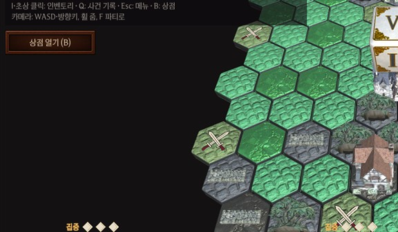
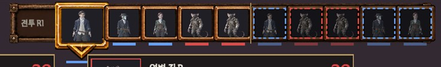
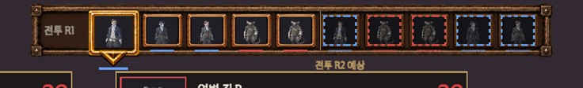

회신 감사합니다. 요청하신 크레딧 표기와 안내 문구는 반영했습니다. 판 바깥 배경도 같이 반영했습니다. 나머지는 11/18까지 할 것과 1막 이후로 나눴습니다.
| 번호 | 항목 | 상태 | 내용 |
|---|---|---|---|
| 01 | 크레딧 | 반영 (일부) | 메인 메뉴 아래에 음원 출처 문구를 그대로 넣음. 팀원 이름·역할, ZEN SERIF 문구는 받으면 바로 추가 (아래 3번 요청) |
| 07 | 첫 플레이 안내 | 반영 | 보드 왼쪽 안내 칸에 3줄 추가 (문구 그대로) |
| 03 | 판 바깥 배경 | 반영 (1막 C) | 하늘 → 어두운 단색. 영혼 수확 75 이상일 땐 짙은 붉은색 (기존 붉은 하늘 연출 유지) |
| 02 | 전투 배경 | 11/18까지 (조건) | 아래 2번 일정 |
| 04 | 추가 모션 | 11/18까지 (조건) | 회복 모션이 디자인에서 오면 연결. 낫 크기는 디자인 회신 건으로 따로 |
| 05 | 타격감 | 1막 이후 | 크리티컬·처치 때만 짧은 흔들림 + 0.05초 멈칫, 흔들림 끄기 옵션 |
| 06 | 전투 속도 | 1막 이후 | 보통·1.5배·2배, 전투 연출에만 |
| 08 | 전체 지도 | 1막 이후 | 우선 검토 항목으로 기록 |




확인: 자동 QA 34개 통과·실패 0 (1920×1080, 1024×768), 오류 0.
| 항목 | 언제까지 | 조건·방법 |
|---|---|---|
| 01 팀원 이름·역할 · ZEN SERIF 문구 | 받은 날 바로 | 문구만 넣으면 됨. 11/14(금)까지 보내 주시면 마감 전 확인 가능 |
| 02 아벨 모로전 — 조명 낮춤 | 11/13 | 조명 값만 바꾸는 일이라 작음 |
| 02 일반 전투 — 런던 거리 분위기 | 11/14 시도 | 기존 건물·소품을 전투 바닥 뒤에 배치. 약 1일 (짐작). 11/15 검수에서 어색하면 빼고 지금 바닥 유지 |
| 04 회복 전용 모션 | 11/14 | 디자인 그림 마감(11/12) 안에 오면 연결·검수. 안 오면 1막 이후 |
| 사신 낫 크기 | 디자인 회신 건 | 지금은 개발 임시 2.2m 낫. 디자인에서 낫만 키운 모델이 오면 교체 |
| 1막 이후: 05 타격감 · 06 전투 속도 · 08 전체 지도 · 별도 크레딧 창 · 템스 강·안개 · 걷기·부활 일어서기·일반 주문 모션 · 첫 상황 안내 창 | ||
11/16~11/18은 1막 전체 플레이 확인과 버그 수정만 합니다 (기획 회신 우선순위대로).
팀장 요청으로 전투 위쪽 순서 칸이 띠·옆 칸과 겹쳐 보이던 것을 고쳤습니다 (칸 크기 줄이고 간격 넓힘). 기획 내용 변화는 없습니다.

